/ portfolio
I am a Multidisciplinary Designer as Service Design is my main dish
-
Helping those want to learn how to play their favourite songs in a fun and accessible way by goal-oriented practice
1 minute to understand YONA
ContextMusic is a beautiful and universal language which everyone can understand but few people can speak. As a pianist and have been playing for over 15 years, I realised that learning music seems difficult for most poeple and it takes a long time before they can enjoy it, but learning music is not as hard as people think.
In this context, I worked with Royal College of Music and developed an accessible way of learning music for the next generation to meet their changing needs, with the ultimate purpose of engaging more people enjoy playing music.
Research & InterviewAs part of the discover stage, my resarech involved ethnographic interviews with 38 people, including 27 music students, 5 music professionals, 4 music teachers, 2 parents, it also involved 1 workshop, online survey with over 100 responses, 2 studnet clubs observation and 1 music-tech company consultant.
What I understandBy mapping out the "cycle jounrey of learning a song" from the research, there are a lot of repeating practice cycles in each section and it was taken a long time to learn. But it was interesting that the mixed emotions (positive and negative) were occurred throughout the learning journey.
Compared different level of learning cycle, for beginners, long learning curve in Technical Section lead to loss of interest and hard to stay self-encouragement.
Huge potential tool for the future of education - AR glasses
In 2016, Venture capitals and corporate investors poured $2.3 billion into VR/AR startups. Facebook believes that AR smart glasses will go mainstream from 2022. Although Google has applied AR glasses technique in social situation but it didn't fit to the market due to privacy. In the coming decade, I believe that AR glassese will be in high demand especially in the field of education and training, where it puts information in an engaging and visual way.
Key Challenges & Insights
Beginners are easy to give up due to the long learning curve at early stage and disconnected service experience, as well as mismatching their initial goals.
These 3 key challenges can be translated into the following opportunities:
( 1. ) Making short-term achievement at early stage
( 2. ) Goal-orientation drives learning
( 3. ) Sociability arouses motivation and continuance in learning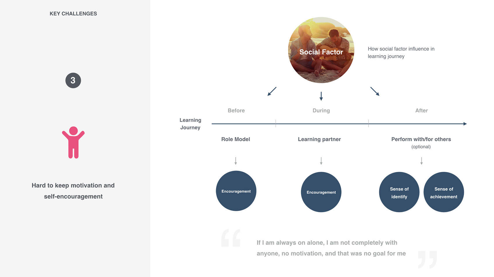
How might we help self-taught learners being able to play their favourite songs and learning music knowledge in an accessible and supportive environment by goal-oriented practice?
The SolutionYONA is a Augmented Reality Music Learning Platform engaging learners to enjoy playing their songs in a fun and easy way.
YONA changes the learning system of how beginners learn piano - Using your passion to reach musical mastery. There are 3 key BENEFITS for YONA:
1. Passion-Driven Learning
- Using your favourite song to inform you what you need to work on
2. On-instrument Learning Experience
- Earning quick achievement by AR glasses
3. Musical Social Platform in AR World
- Providing accessible online and offline meet-up platform
1. Passion-Driven LearningThere are 3 levels: Level 1 creates quick engagement by providing simple instruction on instrument for a learner to follow; Level 2 provides tailored missions based on learners favourite song and learner's current level, so the learner can understand exactly what he/she have to learn and improve to reach the goal. The learner can also only focus on exploring the sections that he/she finds most interesting.
2. On-istrument Learning Experience - AR
AR glasses is a potential tool on education for learners in that it creates a quick engagement on playing music before getting into long practice and reading the music note by on-instrument instruction. I tested this idea in exhibition and it turned out to be an increadible success. (watch previous video)
3. Musical Social PlatformYONA supports people to meet their learning Partners in similar level and same interest by a customised choice, providing a online and offline platform to increase people's self-motvation and continuance.
Information Architecture
The outcome“YONA gives information in an easy way that we never seen before, you have a good framework. This is how you can engage people in a different way, that is what is new, that is not being done yet.”George Waddell -- Research Associate in Performance Science, Royal College of Music
Exhibition of workShow RCA Exhibition at Royal College of Art Kensington 24 June 2017 to 2 July 2017

------------
Partner: Royal College of Music
Date: Jan 2017 - Jun 2017, London, United Kingdom
In team with: Individual
Tutor: Mat Hunter


Designing a suitcase for wheelchair users being confident to travel by themselves
“Take It Easy” is a suitcase designed for wheelchair users. It solves the problems of inconvenient use and psychological pressure of wheelchair users with suitcases on the market, enabling wheelchair users to pack their luggage on their own, without assistances of other people.
Research & Interview
We conducted dozens of interviews with wheelchair users. From which we recongnised that wheelchair users face some problems with current suitcases while packing up their luggage. They couldn’t use the suitcases without other people’s help, therefore they are not able to travel independently with confidence. There is no specialised suitcase designed for wheelchair uers in the existing market.
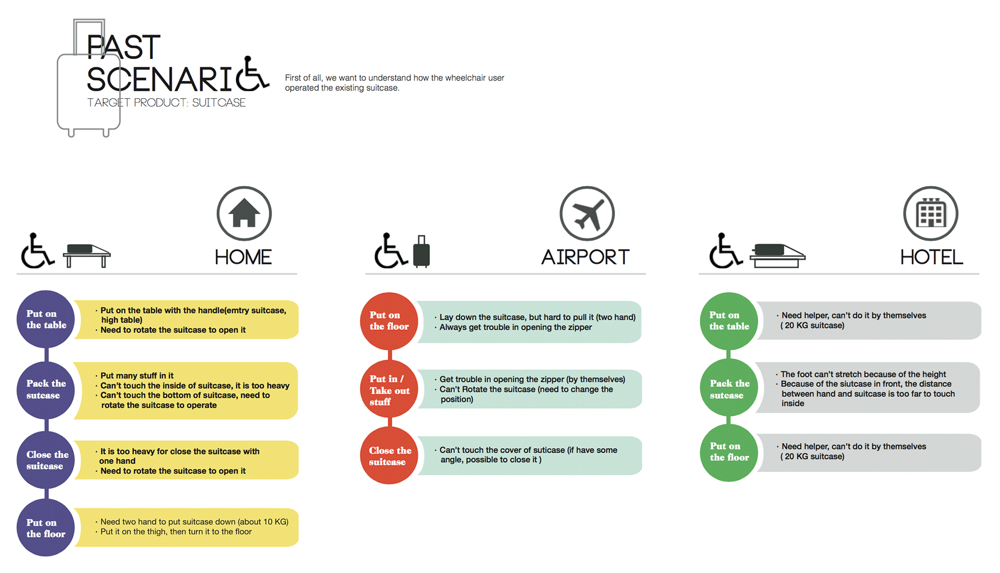Wheelchair users always tend to take care of themselves if possible. From the past scenario, it was clear that wheelchair users met a lot of problmes on using their suitcase due to the unsuitable design.
Intergrate in 7 Problems
Summarise in 2 Key Problems


"WEIGHT"
A suitcase filled with luggage is too heavy for them to take down from the table. They need to asked for help. Moreover, if the suitcase lled wtih stuff, they certainly can not put on the table as well.
"HEIGHT"
Current suitcases should be lay flat while using. However, a wheelchair user can’t reach the suitcases for the limit of their hands. The suitcase should be placed on a small table by other people for them to pack up luggage.
------
Brainstorming and SketchDepending on two main problems, we started to brainstorm the solution via variety of Design Methodologies. For example: Morpholoical Charts.
Marketing Research
Learned from the usage of material, manufacture and structure. Our design should be light, universal and inclusive appearance.
Sketch
According to our key problems, we had sketched over hundards of ideas aiming to solve the usability problems in different scenarios
The Solution
Take It Easy
Modern people like to enjoy lives through traveling, however, a normal activity such as travel would be luxury to the poeple using wheelchair. They will meet barriers not only in the environment, but also their psychological conditions. They would feel bad when always asking other people for help since they don’t want to become a burden to them.
From the basis of “ design for wheelchair traveling”, we searched for the touch point of design. We hope that through our design, wheelchair users can travel with carefree and satisfaction independently. Last but not the least, we’d like to expand our design to universal design. We hope our design can be benefit not only for the wheelchair users but also old people or people who move with difficulty. We believe that not only the environment, but also products should be accessible to everyone.
New Scenario Video
 Main Features
Main Features
1. DETACHABLE DESIGN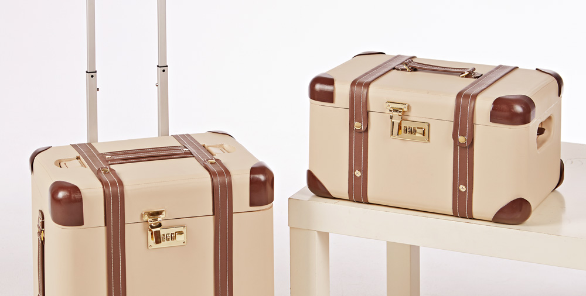The whole design is a combination of two detachable cases. Users can pack up their luggage of commonly use on upper case for special condition without open the whole suitcase. The detachable design also benefits users with flexible size depending on their days of traveling.
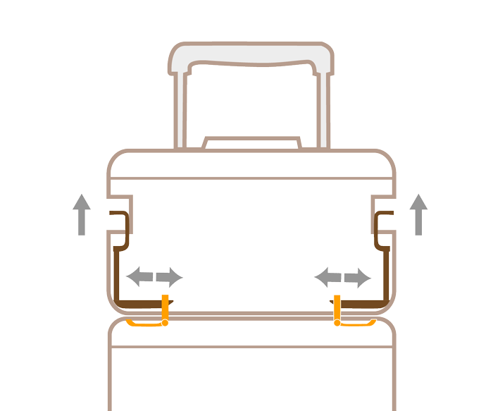The switch design on the upper case can detach the combination, but it can hardly move without applying a force for safety consideration and accident. Moreover, there is a touch-avoiding design for additional protection.
2. UPRIGHT LID DESIGN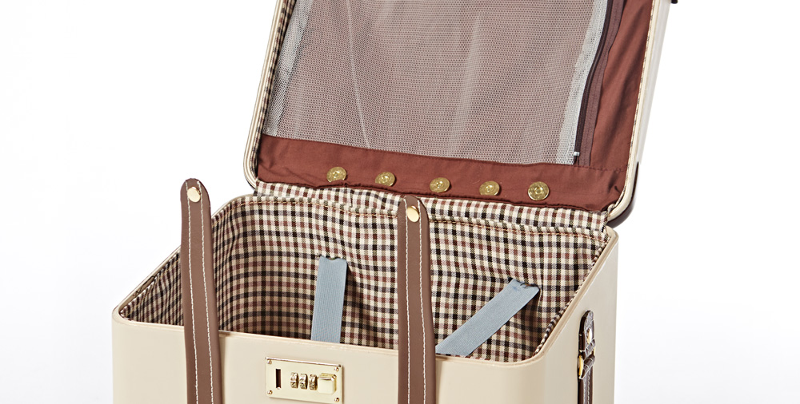
The innovative design of upright lid enables users to use the suitcase without moving it, solving the ergonomic problem of height and weight. Wheelchair users can easily use the suitcase by themselves with one hand beside the wheelchair.
3. INNER BAGS PACKING
The interior design of suitcase combines with inner bags, helping users distribute the weight of luggage and reach the object in the bottom. The design solves the height and weight limit problems of wheelchair users. The inner bags are designed with reaching rope connected to the lid of lower case, user can easily use with one hand.
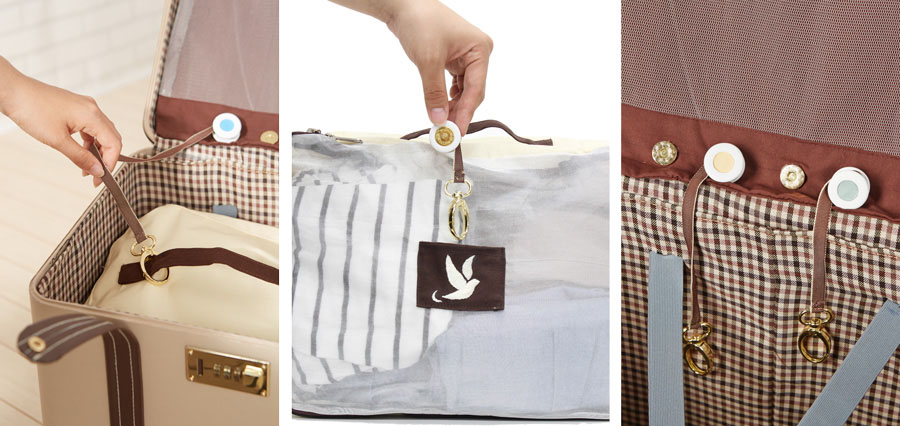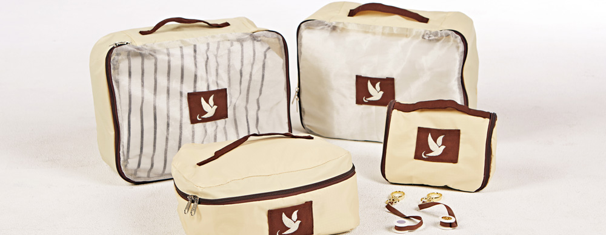
Inner bags design is based on the using habits of our targeted user, female wheelchair users. Inner bags help users to distribute the luggage weight and assorting the luggage while packing.
New Scenario


Drop Avoiding Bag
Drop-avoiding bag is a design in the edge of lower case, preventing the object from falling into the bottom but hard to take. When the user can hardly bend down to take the falling object, they can pull the edge of the drop-avoiding bag that they can reach them.


------------
Date: Sep 2013 - May 2014, Tainan, Taiwan
In team with: Hsin Yi Lo, Hsi Chen, Wen Hui Huang
Tutor: Ding-Bang Luh

London Design Festival - Interactive InstallationI have participated in Mind the Gap exhibition in London Design Festival 2013. Mind the Gap looks at the challenges facing modern urban transportation hubs and the design strategies used to respond to them. This collaborative project between two groups of design students – RCA Design Products' Platform 17 and the National Cheng Kung University in Tainan, Taiwan – focused on London’s Marylebone and Tainan train stations.
INTRODUCTION
KeyFrame–Tainan is an interactive device designed by Long-Kei Fong, Yuan-Chi Tseng and Yu-Chiao Wang that combines culture, digital arts, local music and technology to bring the viewer into Tainan life. Designers mix the style of picture book, watercolor brushes and other visual effects to create a digital scroll representing the urban image of Tainan.
The horizontal scroll captures the local culture, friendly and laid-back residents and the landscape of the ancient capital of Taiwan, Tainan. The viewer is an urban wanderer who can even jump from real world into the virtual urban daily life by the Kinect technology. S/he can follow her/himself and others to explore the illustrated city step by step.
HOW TO PLAY

 DEMO VIDEO
DEMO VIDEO
London Design Festival 2013 - Mind the Gap from 14th to 22nd September
Press Link
------------
Partner: Royal College of Art Product Design Platform 17
Date: Apr 2013 - Sep 2013, Tainan, Taiwan
In team with: Yuan Chi Tseng, Yu Chiao Wang
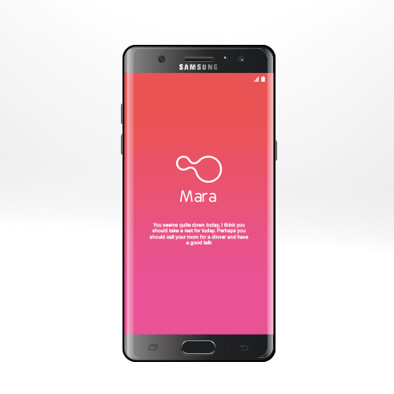
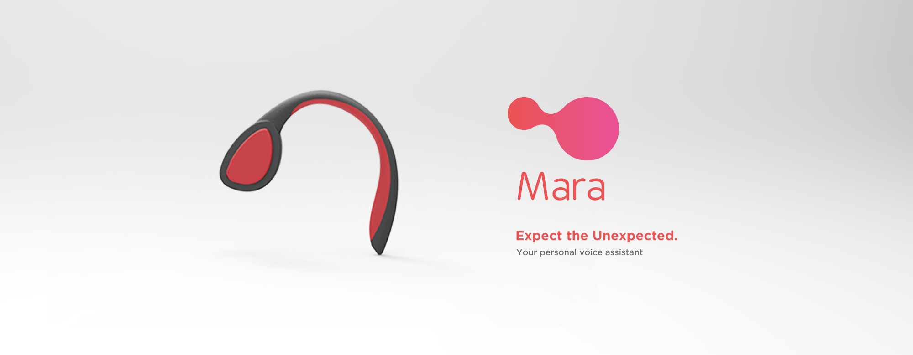
How might Artificial Intelligence quickly advise you to solve unexpected situations, and give you an emotional support?This project collaborated with Samsung and aim to identify the role of mobile devices and changes of mobile lifestyle in the era of AI .Propose compelling Product concepts for next mobile reflecting on this AI innovation and make human more like Super Hero.

What is MARA?
“Mara”is an AI that is friendly, caring and smart assistant, that helps you anytime, anywhere to prevent unexpected situations as well as providing quick advice and emotional support. Mara is able do this by understanding the user, not only through big data, but also your emotions, personality and your value. This will make Mara empathise the users and truly give you the best support.
Research & Interview
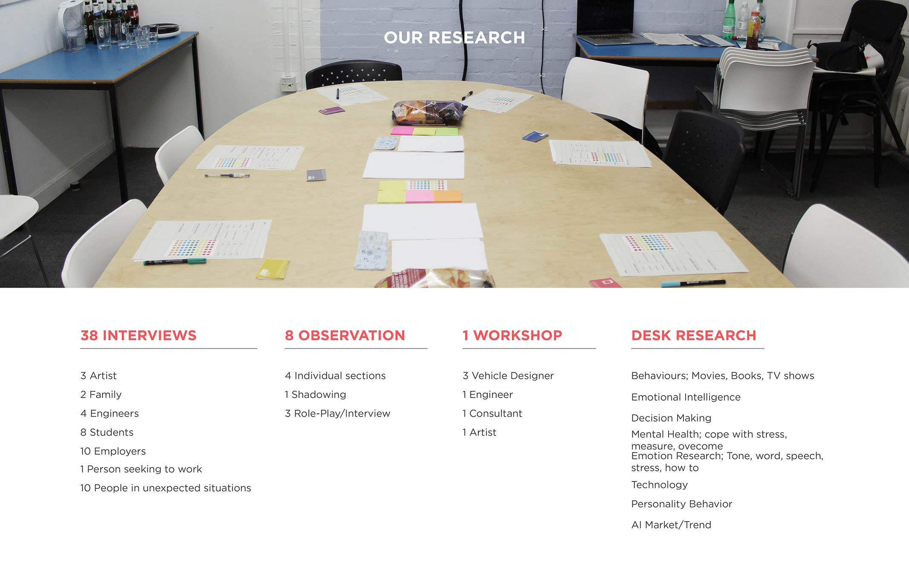
The barrier of AIDespite the increases AI market it seems like not many people are not using the AI or satisfy of what the AI is providing. From our interview we found that most people only use alarm clock or asking for weather and calls. They do not seem to use any other feature despite it can do more.

Target User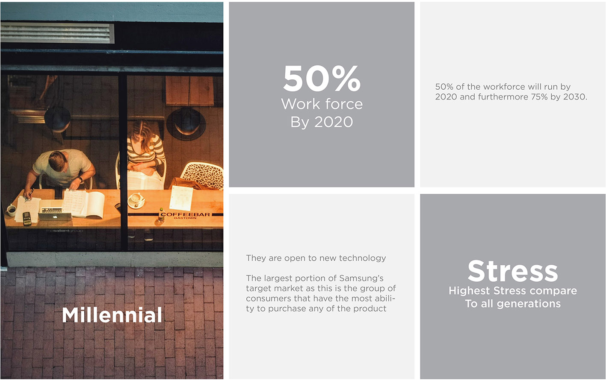
WorkshopAccording to first round interviews and observation from people’s daily routine, which address many unexpected and hard moment resulting in negative experience. We decided to organise a workshop to deeply comprehand how they behave and feel in this situations.

Key InsightsWe have found 3 main insight during the workshop. First people have different sets of value, whether that is towards work or relationship. Second because of this value, people have different needs. Lastly there are 4 elements people also judge when a situations happened.
Different priority of personal value
4 Elements of MotivationsThere are 4 elements people always think about when judging a situations.
The Solution

“Mara” is a personal voice assistant that are able to preventing unexpected situations, provide quick advice and give you emotional support. Mara is able do this by understanding the user, not only through big data, but also your emotions, personality and your value. This will make Mara empathise the users and truly give you the best support.
How does it work?MARA is divided mainly between Quick advice and Emotional support. It will extract informations not only from your data, but also emotions, personality, person value and etc. To provide the way it quick advice and support. This could be the word ,tone, or the order of how AI interact with the users.
Architecture of MARA
Emotional Support Principle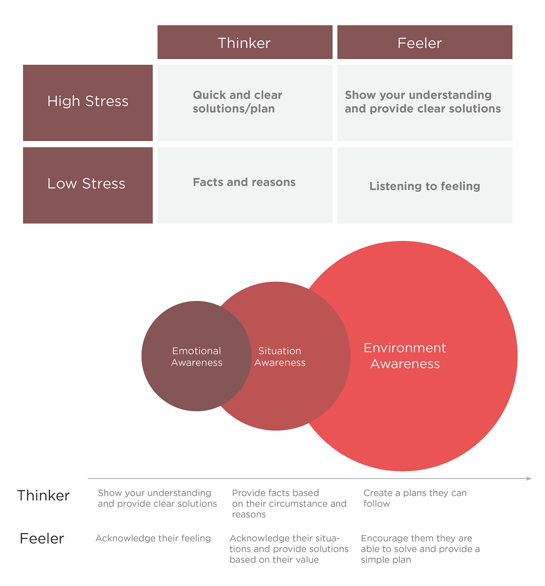
The DeviceWe think Mara will shine the most as a earphone and staying with you all the time. Earphone is also a great device to detect your stress level, emotions, voice and etc. Not only that we think is im- portant to communicate with your AI privately hands free, so you can con- centrate on the situations you are at.
Additional we think bone conduction could solve the problem with blocking the ear while walking as well as more comfort.
------------
Partner: Samsung
Date: Sep 2016 - Dec 2016, London, United Kingdom
In team with: Sean Koo, Monica Chen
Tutor: Nick de Leon


How might we enrich interconnections within the community to encourage people to take responsibility for their health?This project is awarded with THIPP Vanguard Staff Innovation Fund (£25,000) from Tower Hamlets Integrated Provider Partnership to run a pilot scheme in William Davis primary school and Blithehale Medical Centre.
The backdrop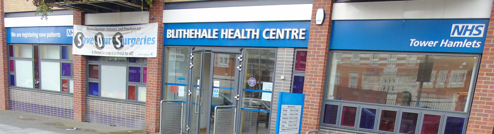
The multi-culturally diverse and relatively poor borough of Tower Hamlets faces different challenges. The practice has little means to deal with the root causes of the increase in people's demand. The health center is therefore looking for a new way of transfering knowledge utilising it's resource with the community.
Research & Interview

The research involved demographic interview, local media analysis, observation in centre and lots of patient interview. It was clear that patient always feels dismissed by the doctor and questions the efficacy of his advice, there is no feedback loop in healthcare centre and they are disconnected with doctors.
Summerise Key Insights

We combinated all of the insights from our different research to make a big picture, we concluded them as our problem statement: "There is an increasing demand for healthcare and the practice has little PROBLEM means to deal with the root causes of people's demand." It also can be divided in the following 4 key problems:
IdeationGenerate different ideas via variety of design method and discussion
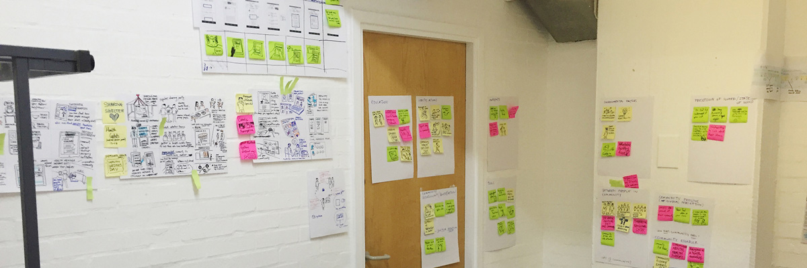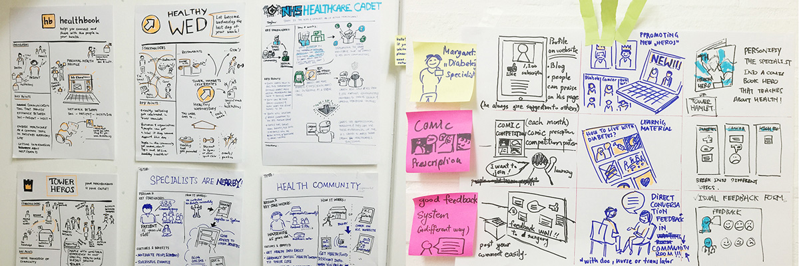
The Solution
Health Cadet
ConceptHealth Cadets builds on the idea of the existing after school club. With the ultimate goal of keeping people healthier and reducing demand for care, it aims to be more strategic about what it teaches and how those learnings can be transferred back to the community.
By teaching on local health issues with tools to make the learning outcomes of each lesson highly visible, the after school club can become an effective health promotion tool in the community.

Health Cadets uses children aged between 12 and 16 as a method of transferring knowledge of preventative healthcare into the community. So the service starts here with the NHS who orchestrate it. It starts with a toolkit.
ToolBox
Within the toolkit there is everything the practice needs to teach children: ID badges for kids, Achievement books, work folders, lesson plans and certificates. It is also creating more meaningful feedback from kids and community.
Storyboard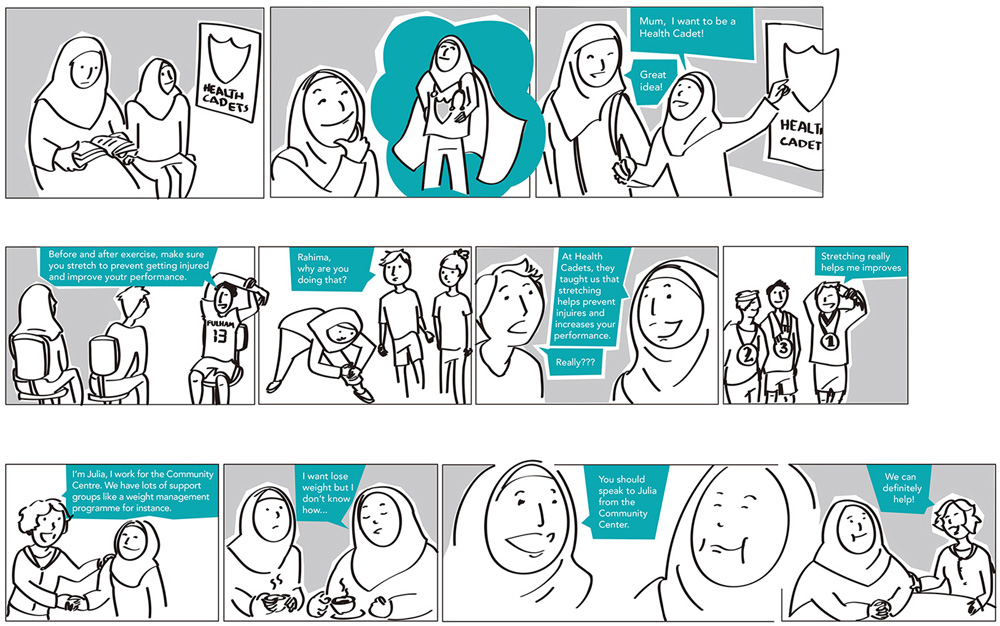
Prototype & Exhibition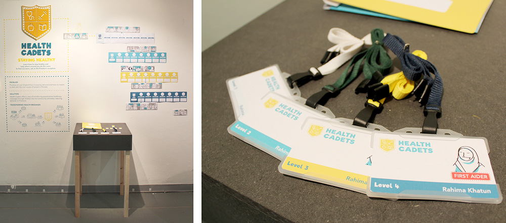
------------
Partner: Blithehale Health Centre
Date: Sep 2015 - Dec 2015, London, United Kingdom
In team with: John Makepeace, Anna Schoen, Jia Xiang Chua
Tutor: Gus Desbarats
ArtworksDigital Drawing - Artbook published in 2019
C96 Artbook link
Running / 2019
Table Tennis / 2019
Participated event and sold artbook at Comic Market 2019 in Tokyo, Japan
------------
Date: Jan 2019 - Jul 2019, London, UK
In team with: Individual
 2D Motion Graphic
2D Motion Graphic
YONA - Future of Music Education / 2017Tata Consultancey Services - SWAT Team - FX Opening/ 2020Hong Nam Volunteer Association FX Video / 2019Smooth Start / 2015Worth+ - Explore True Value/ 2016CYKED / 20163D AnimationRUN and GUN / 20132D AnimationPui Ching Middle School Promoting Video / 2012
Interview Video Opening / 2012Video - Take It Easy / 2014

How might we support seniors living in their homes independently for longer by technology interventionThis is an on-going project in Tata Consultancy Service for HSE Ireland along with Dublin City Council for the Pilot. Our focus is aiming to creating new opportunities, offerings and driving new engagement in the care market.
EcosystemConnected home ecosystem map - which illustrates the relationship and interaction among all stakeholders both in external and internal network.
Ethnographic ResearchFrom the interview, we collected many interesting insights that we can not see on the care report. Seniors said that they do not want to be treated as an elderly but the market does not respond on the flexibility of the equipment design and service.

In this user journey map, I emphasises on articulating the mobility of elderly people, which is the key for technology intervention.
Persona Segmentation InsightsThis map leads us to the segregation of the ageing market into 2 clear segments:
(1) The 'YOUNG OLD' who are typically 65-80 and who do not feel old, and do not want to be reminded that they are old. For them the technology needs to be 'INVISIBLE' and bought like insurance. Often influenced strongly by family members.
(2) The 'LATER OLD' who are typically 80+ and are experiencing a loss of confidence owing to declining eyesight, mobility, or cognitive abililty. For them technology needs to be 'VISIBLE' and bought & consumed as an extension of care.
Pain Points - Family MemberThis is a complex sphere where is not just about the elder people but also the family members and the carers in the care ecosystem. We have to consider all stakeholder's demand as buyer and user should be different in our service.
The Solution
Sensor-enabling homeThis service involves seniors enabling the homes of residents and uses TCS Assisted Living Platform to deliver alerts and notification to family members and carers through a web/mobile interface, allowing them to remotely monitor the well being of the seniors. It also enables seniors to live more independently in their homes.
Achieving ( 1. ) wellness and ageing with confidence for the elderly, ( 2. ) peace of mind for family members, and ( 3. ) efficiency as well as effectiveness for care workers
PrototypeAccording to the result of user feedback, we summarised in 3 insights:
( 1. ) Home page info should be highlighted and clear for quick check-in
( 2. ) The frequency of alerts is the primary touchpoint to user
( 3. ) The language we use should be human-oriented rather than sensor-oriented
Second PrototypeIn the second around, 90% of users gave positive feedback, but we still need to consider:
( 1. ) Lack of the flexibility for the text space from the square box design
( 2. ) users care the condition of seniors rather than the sensor status - task-based statement
The Design
Dashboard - Care administrator
Web Design
ON-GOING in TCS!I am currently working in Tata Consultancy Service as a Service Designer. I am leading the design work of this project and our team is welcome for collaboration or who are interested in this topic as a partner or client. Feel free to contact me and let's have a chat!
My email in TCS: longkei.fong@tcs.com
------------
Project in: Tata Consultancy Service
Date: 2018 - present, London, United Kingdom
In team with: SWAT Team
Mentor: Ved Sen


Helping cyclists match suitable local bike shops, with best shopping & maintenance experience - [Short project]
Concept VideoCyked is the new cycling marketplace connecting cyclists with the country’s best rated independent sellers.
Market potential in London
Key findings

Accounding to the result of our online survey and user interview, the cycling market could not response to user's requirements due to disconnected information flow within the cyclist community.

Sketch and Designing structure

Built up the service structure based on our key 3 features: Shopping, Maintenance & Finding suitable local bike shops.
Prototype and testing

We created rapid prototype to vlidate our ideas with end user. over 60% of user feedback mentioned that the app proactively helped them to explore the local cycling market well.
User Interface Design

Web Design------------
Partner: Imperial College Business School
Date: Apr 2016, London, United Kingdom
In team with: Martin, Alex, Ben, Lulia, James, Mark, Willa
Learn Visual Design Principle by Comprehending Reading Experience / 2019
/ about me
Experience & Academic background
ROCKY FONG
( Long-Kei Fong )
Visual & Service Designer
cv
I am a Multidisciplinary Designer specialised in Service Design, User Experience Design and Visual Design, with a background of Product Design. I love to involve in the holistic design process and deliver the high quality of design.
I am also an expert in converting observations to valuable opportunities in a visual and simple way by capturing people’s needs and invisible motivations, along with delivering the significant values for all stakeholders' needs through human-centred design methodologies.
Having studied in Macau China, Taiwan and United Kingdom, I have a strong sense of marketing and multicultural communication, which equipped me different perspectives on involving buisness strategy, design thinking and marketing strategy.
I believe that Service Design is an indispensable strategy to make achievable social impact and improve people’s life, it will be a key role in a business and startups for every industries in the near future.
( I am a Portuguese and Macao passport holder )-
2019
- Japanese Language Proficiency Test(JLPT) passed: N2 level, London UK
-
2018
- Japanese Language Proficiency Test(JLPT) passed: N3 level, London UK
-
2017
- Service Designer: Tata Consultancy Service, London UK
- Master: Royal College of Art, London United Kingdom, Department of Service Design, London UK
- UI /UX Designer: XDs group - freelance, London UK
- Imperial College Fringe Festival 2017, Worth+ exhibiton, London UK
-
2016
- Imperial College Business School:
Innovation, Entreprenuership and Design Module of Executive MBA, London UK - Freelance: Visual and page lay-out Design for Pui Ching Middle School
- Imperial College Business School:
-
2015
- Starting Master course: Royal College of Art, Department of Service Design, London UK
- Freelance: Visual and Video effect, Macau China
-
2014
- Bachelor: National Cheng Kung University, Tainan, Taiwan, Department of Industrial Design
- Graphic Designer: Worked for Conde Group, Macao
-
2013
- London Design Festival 2013 Mind The Gap Exhibition, London UK
- Freelance: Video Effect for Ministry of Science and Technology, Tainan Taiwan
-
Macau
Highschool
Pui Ching Middle School
SCIENCE
2004-2010
-

Taiwan
Bachelor
National Cheng Kung University
INDUSTRIAL DESIGN
2010-2014
-

United Kingdom
Master
Royal College of Art
SERVICE DESIGN
2015-2017
experience
I have worked WITH, FOR, or AT...


/ Design Process
How service designer works
1. DISCOVER
Can be used to explore the problem area, focus on an specific issue or crowdsource insights about a particular topic.
2. DEFINE
Can be used to validate problem definitions and test the assumptions underlaying those definitions
3. DEVELOP
Can be used to co-create ideas, validate design hypothesis and build prototypes. Here is suggested to conduct separate workshops
4. DELIVER
Can be used to validate and test prototypes
/ contact
Always looking for collaboration opportunity and interesting people to talk to!
Feel free to get in touch with me<Your message has been sent. Thank you!
Sorry your message can not be sent.